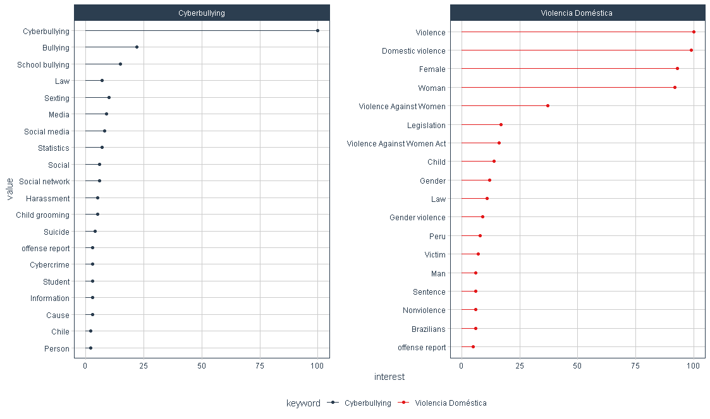
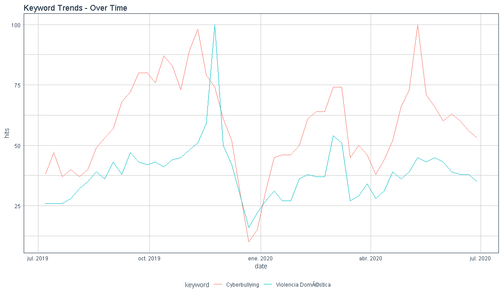
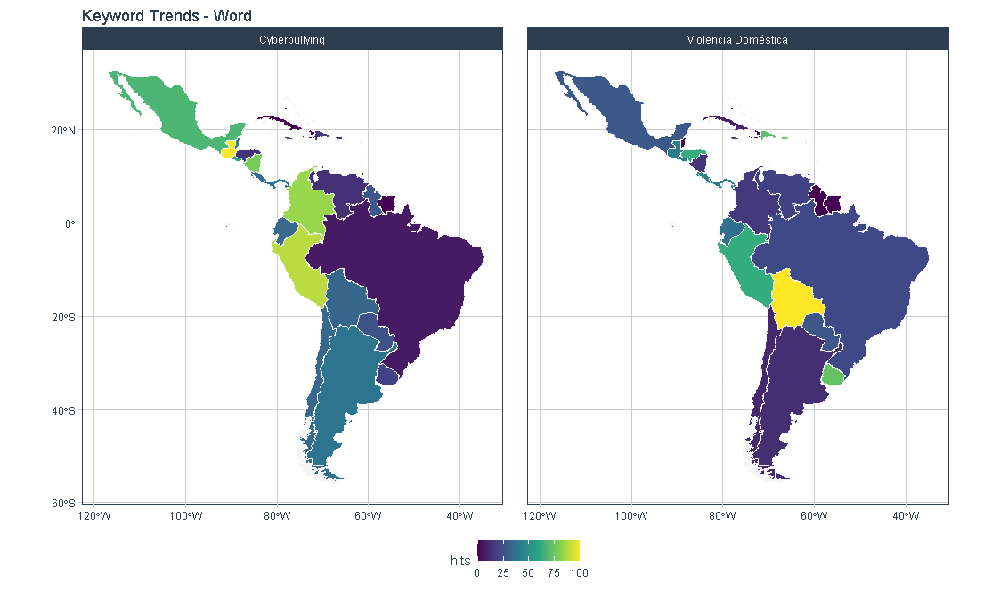

Para obtener una aproximación sobre la situación de violencia de género, cyberbullying, acoso y violencia doméstica entre los años 2019 y 2020, en la región de Latinoamérica y el Caribe. En conjunto con el Banco Interamericano de Desarrollo -BID, se ha realizado una recopilación de datos de mediante una consulta masiva en línea, sobre los siguientes tópicos (keywords):
Contrastando la información, desde consultas que se hayan realizado a Google en: - Noticias - Sitios web - Youtube
La presente documentación tiene como objetivo facilitar la disposición del script, inputs y outputs, entendidos como el código en Rstudio, la data de entrada y los resultados respectivamente. Esto, con la finalidad de que la información pueda ser ser reutilizada, reproducida o modificada de acuerdo al criterio de los investigadores y u otros objetivos que pudiesen surgir de este proyecto.
Cada uno de los resultados corresponde a una secuencia de 5 Scripts, que pueden ser revisados en detalle en el apartado denominado “Script”.
Entre las fechas 2019-07-01 y 2020-07-01, se indagó en los siguientes términos:
Buscando confirmar tanto los tópicos o palabras clave, como también otros términos que pudiesen estar relacionados, como se observa en la siguiente gráfica:
topics_tbl = readRDS("topics_tbl.rds")
topics=topics_tbl %>%
ggplot(aes(value, interest, color = keyword)) +
geom_segment(aes(xend = value, yend = 0))+
geom_point()+
coord_flip()+
facet_wrap(~ keyword, nrow = 1, scales = "free_y")+
theme_tq()+
scale_color_tq()
plot(topics)
interest_tbl=readRDS("interest_tbl.rds")
Interest=interest_tbl%>%
ggplot(aes(date,hits, color=keyword))+
geom_line()+
theme_tq() +
labs(title = "Keyword Trends - Over Time")
plot(Interest)
map_plot=st_read("map_plot.shp")
geo_word= ggplot() +
geom_sf(data = map_plot,aes(fill = hits),color = "whitesmoke",size=0) +
scale_fill_viridis_c()+
theme_tq()+
facet_wrap(~ keyword, nrow = 1) +
labs(title = "Keyword Trends - Word")
plot(geo_word)
Se especificó la consulta sobre las tendencias de Google, a través de la ubicación geográfica de las consultas de las palabras clave. Así como el período de tiempo que desea obtener datos, para los diferentes productos (“gprop”) que desean consultar, en específico: Sitios Web, Noticias y Youtube.
gtrends_gral <- readRDS("gtrends_gral.rds")
gtrends_gral <-gtrends_gral[order(-gtrends_gral$hits),]
head(gtrends_gral)## # A tibble: 6 x 5
## date hits keyword geo gprop
## <dttm> <int> <chr> <chr> <chr>
## 1 2019-07-07 00:00:00 100 Ciberacoso AR web
## 2 2019-08-11 00:00:00 100 Ciberacoso BO web
## 3 2020-03-08 00:00:00 100 Ciberacoso CL web
## 4 2020-05-31 00:00:00 100 Ciberacoso CO web
## 5 2020-04-19 00:00:00 100 Ciberacoso CR web
## 6 2019-10-20 00:00:00 100 Ciberacoso DO webgtrends_new <- readRDS("gtrends_new.rds")
gtrends_new <-gtrends_new[order(-gtrends_new$hits),]
head(gtrends_new)## # A tibble: 6 x 5
## date hits keyword geo gprop
## <dttm> <int> <chr> <chr> <chr>
## 1 2019-09-15 00:00:00 100 Ciberacoso AR news
## 2 2019-10-27 00:00:00 100 Ciberacoso CO news
## 3 2019-10-27 00:00:00 100 Ciberacoso MX news
## 4 2020-05-10 00:00:00 100 Ciberacoso PE news
## 5 2019-10-20 00:00:00 100 Ciberbullying AR news
## 6 2019-11-24 00:00:00 100 Ciberbullying MX newsgtrends_ytb <- readRDS("gtrends_ytb.rds")
gtrends_ytb <-gtrends_ytb[order(gtrends_ytb$hits),]
tail(gtrends_ytb)## # A tibble: 6 x 5
## date hits keyword geo gprop
## <dttm> <int> <chr> <chr> <chr>
## 1 2019-10-13 00:00:00 100 Sexting CO youtube
## 2 2019-11-17 00:00:00 100 Sexting CR youtube
## 3 2020-02-09 00:00:00 100 Sexting DO youtube
## 4 2020-04-05 00:00:00 100 Sexting DO youtube
## 5 2020-02-23 00:00:00 100 Sexting EC youtube
## 6 2019-07-14 00:00:00 100 Sexting GD youtubeSe ejecutan las siguientes librerías, una vez realizado este proceso, no es necesario hacerlo nuevamente.
Luego se buscan los “keywords” en idioma inglés y español.
Tendencias y geografía
Web Ggrop